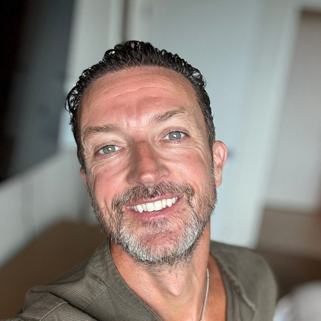

About
I help global enterprises decide how AI should change their business, and then I show them what it looks like.
For fifteen years I’ve argued that enterprise technology is built the wrong way round: buy the technology, chase the business value, and treat experience as the final coat of paint. I flip it. Define the experience first, use technology to close the gaps, and the value follows.
I’m a Global Director at Salesforce, drafted in to lead experience on strategic Agentforce programmes. That includes the conversation design for the Agentforce fan companion on F1.com, serving 827 million fans. Before Salesforce I led experience across PwC’s Salesforce portfolio, built design practices from nothing, and delivered an early, large-scale offline iPad platform for more than 10,000 British Gas engineers.
Career
- 2026 to now
- Global Director – Agentic Experience, Salesforce
- 2022 to 2025
- Transformation Director, UX & AI, Salesforce
- 2019 to 2021
- Salesforce Experience Lead, EMEA to Global, PwC
- 2017 to 2018
- Director, Experience Design & Mobile, PolSource
- 2013 to 2017
- Director of User Experience, CloudSense
- 2011 to 2013
- Practice Director, UI/UX, Tquila
- 2006 to 2011
- Founder of my own studio, then Momac and Imano
Standards and recognition
- Co-wrote the Salesforce Certified Platform User Experience Designer exam (2021) and the Platform Strategy Designer exam (2022)
- Wrote and presented Salesforce’s company-wide enablement on accessible agentic design (2026)
- Outstanding Contribution to the Salesforce Ecosystem award
- PwC CEO Innovation Award, for Jaguar Land Rover
- Conga Innovation Award, for Volvo Trucks
- MCA Awards 2021, two programmes named finalists
- NHS Heroes CEO Award
- Speaker at AI for Change, IBM’s summit in Helsinki